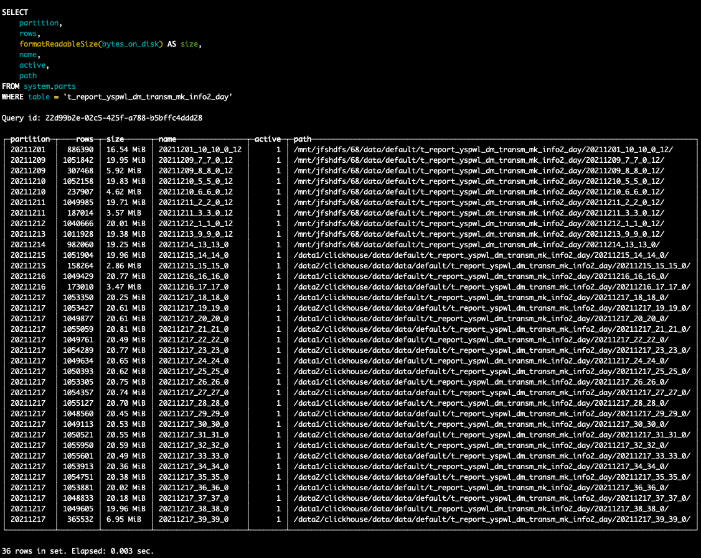
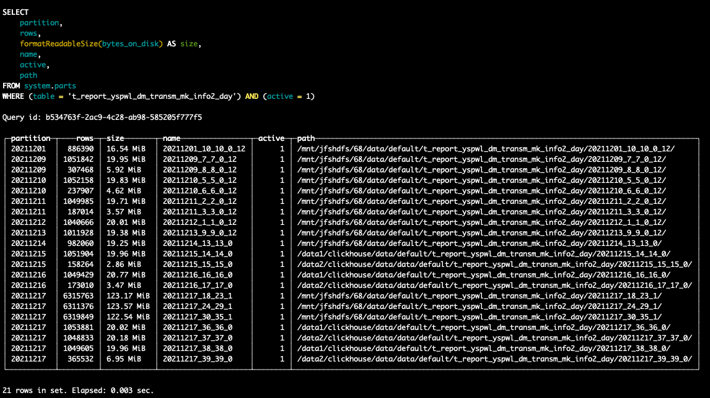

clickhouse+JuiceFS冷热数据分层+读写分离的方案
clickhouse+JuiceFS冷热数据分层+读写分离的方案
JuiceFS简介
juiceFS的介绍可以参考juiceFS github
JuiceFS 是在 GNU Affero General Public License v3.0 下发布的高性能 POSIX 文件系统。它专门针对云原生环境进行了优化。使用 JuiceFS 存储数据，数据本身会持久化到对象存储（如 S3、oss）中，数据对应的元数据可以根据需要持久化到 Redis、MySQL、SQLite 等各种数据库引擎中。
JuiceFS 可以简单方便地将海量云存储直接连接到大数据、机器学习、人工智能以及已经投入生产环境的各种应用平台，无需修改代码，您可以像使用本地存储一样高效地使用海量云存储。
为啥会考虑使用JuiceFS
与Hadoop 生态组件通常依赖 HDFS 作为底层的数据存储不同，ClickHouse 使用本地盘来自己管理数据，社区建议使用 SSD +raid盘的方式作为存储介质来提升性能。但受限于本地盘的容量上限以及 SSD 盘的价格，用户很难在容量、成本和性能这三者之间找到一个好的平衡。由于JuiceFS 是基于对象存储实现并完全兼容 POSIX 的开源分布式文件系统，同时 JuiceFS 的数据缓存特性可以智能管理查询热点数据，非常适合作为 ClickHouse 的存储系统，下面将详细介绍这个方案。
方案细节
由于JuiceFS完全兼容POSIX协议，因此可以将JuiceFS mount到本地磁盘，不同的节点可以都使用同一个JuiceFS进行mount，并使用不同的目录进行区别。
为了演示，使用hdfs作为JuiceFS的存储，使用redis作为JuiceFS的元数据存储。
初始化JuiceFS
1 | juicefs format --storage hdfs \ |
mount JuiceFS
1 | sudo juicefs mount --cache-dir /data5/jfsCache -d redis://:<pwd>@<ip>:<port>/<db> /mnt/jfshdfs |
配置clickhouse磁盘和存储策略
1 |
|
配置中定义了hot_cold策略，该策略中包含hot和cold两个磁盘卷，hot中指定的是两个本地磁盘，cold中指定的是JuiceFS远程共享文件系统，max_data_part_size_bytes表示可以存储在卷的任何磁盘上的部分的最大大小。如果合并部分的大小估计大于 max_data_part_size_bytes，则该部分将被写入下一个卷。基本上，此功能允许将新/小部件保留在热 (SSD) 卷上，并在它们达到大尺寸时将它们移至冷 (HDD) 卷。为了测试这里设置为100Mmove_factor配置表示当磁盘的容量超过 80% 时触发数据移动到 JuiceFS。
重启clickhouse-server，查看存储策略是否生效

建表测试
建表
新建一张按天分区的表，默认的存储策略设置为hot_cold, 设置超过20天的数据move到cold磁盘卷中
1 | CREATE TABLE default.t_report_yspwl_dm_transm_mk_info2_day |
插入数据
- 当插入20天前的数据，parts会直接写入到
cold中 - 当插入
2021-12-17号的数据，查看parts分布

过一会等后台线程merge后再查看,可以看到17号的数据大于100MB的parts被存进了cold存储中

查看目录文件

一种读写分离的思路
采用JuiceFS存储clickhouse冷数据，可以有效的扩展clickhouse单节点磁盘不足的问题，同时由于JuiceFS的共享特性，可以引申出一种读写分离的架构，如下图所示。对于ck本地表default.table1，在离线场景下，可以从k8s上启动临时的ck server，将离线数据写入到对应表中，当分区的数据写完后，可以detach partition，然后将这个partition对应的目录move到正式集群对应的节点对应的目录中去，再在正式集群中attach进行使用。此做法在重跑大量历史数据时，可以大大减轻正式集群的节点写入压力。
参考
Shopee ClickHouse 冷热数据分离存储架构与实践